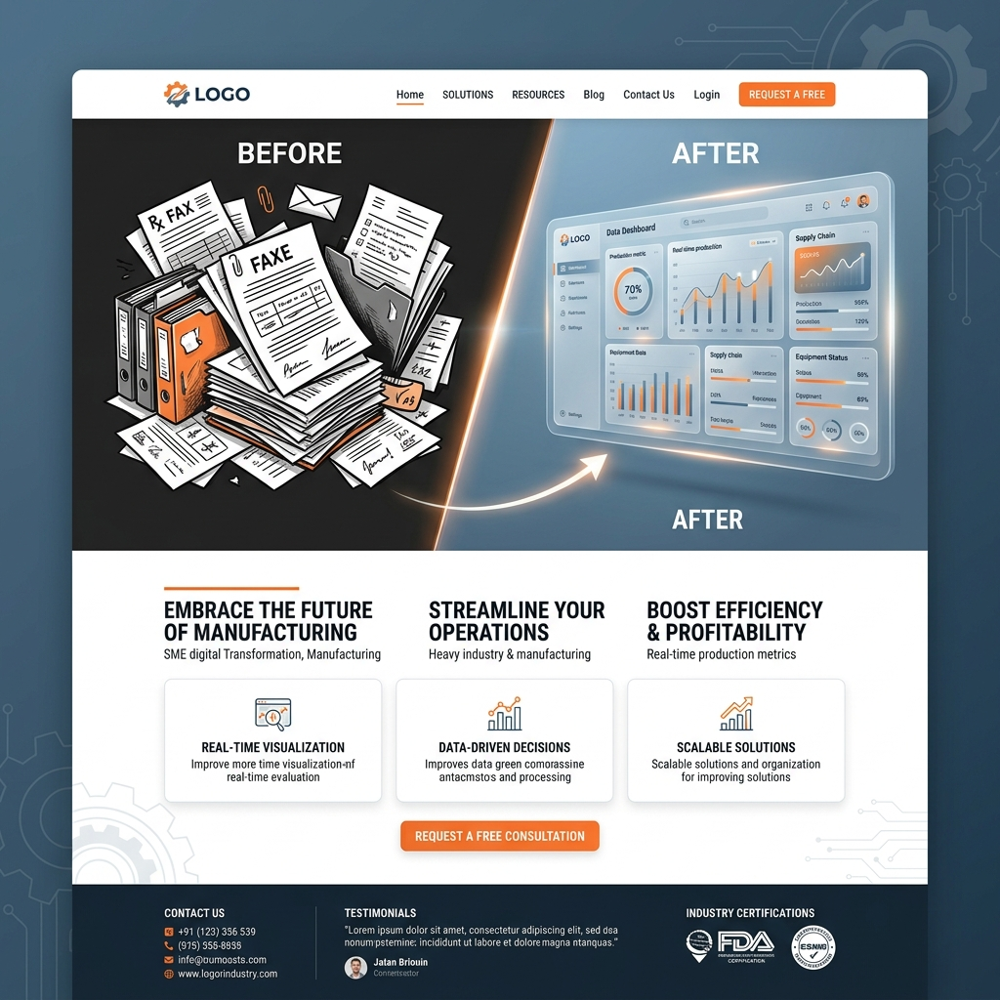

INDUSTRIAL / MANUFACTURING DX
「町工場の図面」を、
「町工場の図面」を、
クラウド上の宝の山へ。
FACTORY DX CLOUDは、紙の図面や職人の手書きメモをAIが読み取って3Dデータ化し、見積もりから工程管理、納品までをスマートフォン一つで完結させる、中小規模製造業向けの一元管理プラットフォームです。

THE ANALOG CHAIN
「紙とFAX」で止まったままのサプライチェーン
いまだに図面をFAXでやり取りし、進捗をホワイトボードで管理している。このアナログな情報の分断が、見積もりの遅れや致命的なミスの温床となっています。
DATA CONVERSION
あらゆるアナログ情報を「データ」へ変換
手書き図面のAI・3D化
油で汚れた紙の図面をスマホで撮影するだけ。AIが寸法線や公差を読み取り瞬時に正確な3D・CADデータへと変換します。
過去の類似図面からの「自動見積もり」
過去の数万枚の図面データから類似形状をAIが瞬時に検索し、当時の加工時間をベースに適正な見積もり金額を数秒で算出します。
現場のスマホで完結する工程管理
現場の職人が手元のスマホでボタンを押すだけで工程の進捗がクラウドに反映されます。
SKILL TRANSFER
職人の「加工ノウハウ」のデジタル継承
ベテラン職人が図面の端に書き込んだメモ書きをAIがテキスト化してデータベースに蓄積。若手社員がいつでも引き出せます。
FACTORY NETWORK
協力工場とのシームレスな受発注ネットワーク
プラットフォーム上で繋がった全国の空き稼働を持つ別の工場へ、図面データをワンクリックで共有しシームレスに外注が可能です。
CLIENT SUCCESS
Case Study | 従業員15名の金属加工工場
システム導入により自動見積もりで事務作業が1日2時間削減。若手社員でも社長と同じ精度で見積もりが出せるようになり属人化からの脱却に成功しました。
OUR VISION
日本のモノづくりの「底力」を拡張する
優れた技術を持つ町工場が事務作業で疲弊するのは社会の損失です。彼らが本来の価値創造に100%集中できるインフラを提供します。